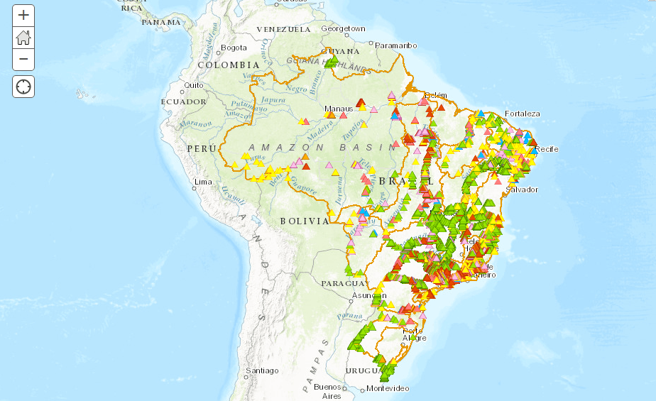

in Instrumentos, Nacionais, Planos
Descobrindo as outorgas na ANA
O CNARH foi desenvolvido pela Agência Nacional de Águas (ANA), em parceria com autoridades estaduais gestoras de recursos hídricos. “O objetivo principal é permitir o conhecimento do universo dos usuários das águas superficiais e subterrâneas em uma determinada área, bacia ou mesmo em âmbito nacional”. Para acessar o site do CNARH utilize o seguinte endereço: http://cnarh.ana.gov.br/ MAIS